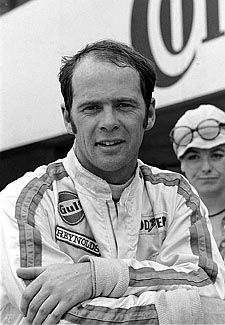
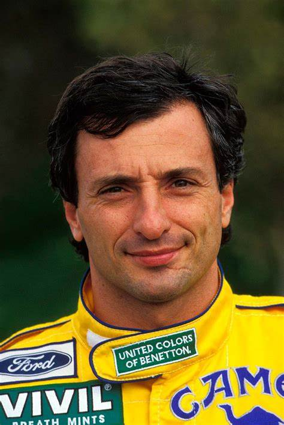
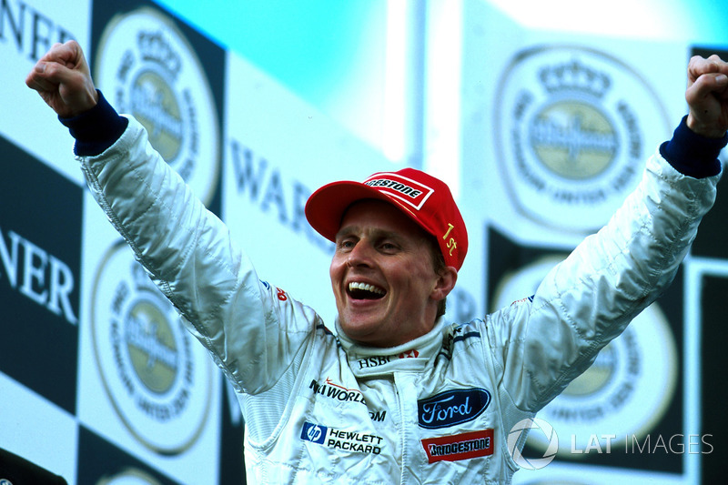
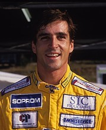
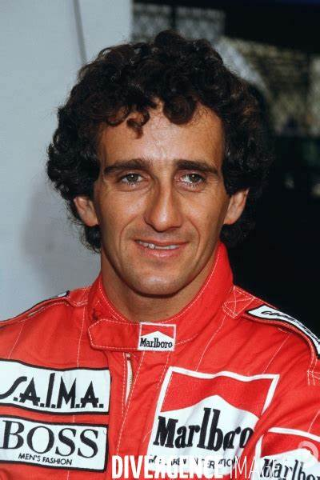
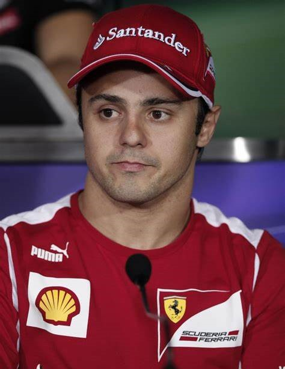
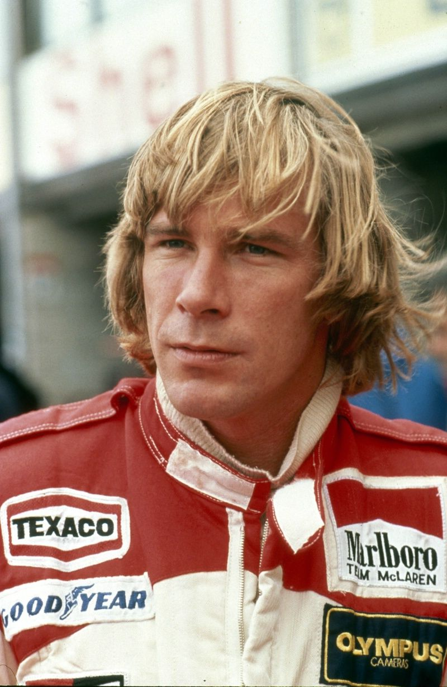
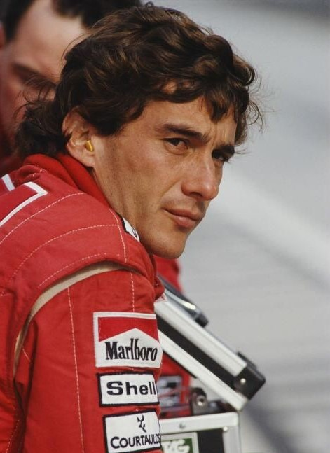
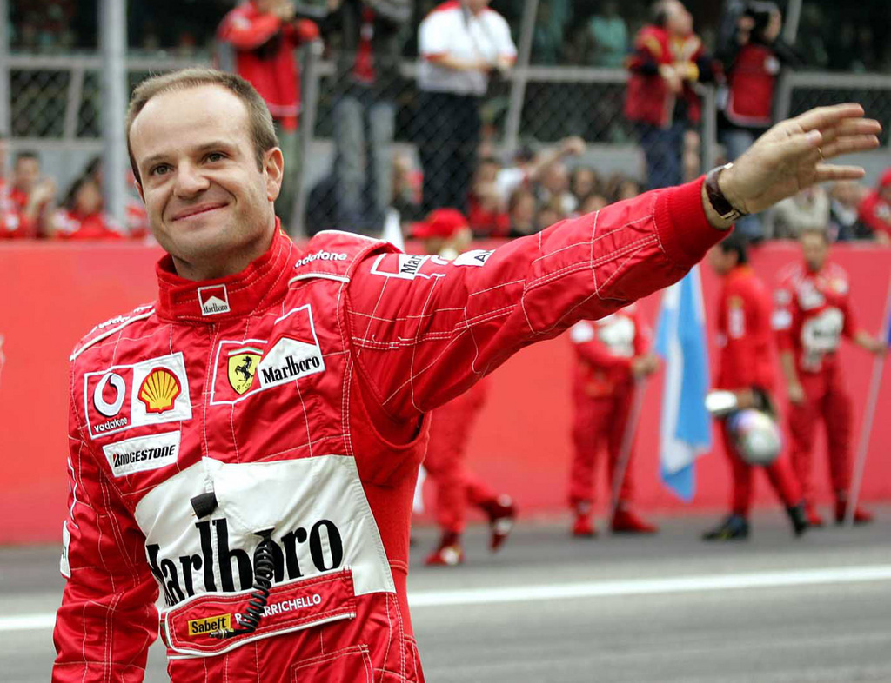

Lewis Hamilton
McLaren
Gran Premio de Brasil 2012
Una carrera emocionante que vio a Hamilton superar a Sebastian Vettel en la última vuelta
para ganar el campeonato mundial.

Peter Gethin
BRM
Gran Premio de Italia 1971
Una carrera muy reñida que vio a Gethin ganar por solo 0,01 segundos, el margen de
victoria más estrecho en la historia de la F1.

Riccardo Patrese
Brabham
Gran Premio de Europa 1999 (Nürburgring)
Una carrera caótica marcada por la lluvia y los accidentes, que vio a Patrese
ganar desde la pole
position.

Johnny Herbert
Stewart
Gran Premio de Europa 1999 (Nürburgring)
Una carrera memorable que vio a Herbert ganar desde la pole position y liderar
de principio a fin.

Damon Hill
Jordan
Gran Premio de Bélgica 1998 (Spa-Francorchamps)
na carrera emocionante que vio a Hill ganar desde la pole position y
liderar la mayor parte de la carrera.

Alain Prost
McLaren
Gran Premio de Australia 1986 (Adelaïde)
Una carrera dominada por Prost, quien lideró de principio a fin y ganó por
más de un minuto.

Felipe Massa
Ferrari
Gran Premio de Brasil 2008 (Interlagos)
Una carrera dramática que vio a Massa ganar desde la pole position,
pero perder el campeonato mundial ante Lewis Hamilton en la última vuelta.

James Hunt
McLaren
Gran Premio de Alemania 1976 (Nürburgring)
Una carrera épica que vio a Hunt ganar el campeonato mundial por un solo punto
sobre Niki Lauda.

Ayrton Senna
McLaren
Gran Premio de Japón 1990 (Suzuka)
Una carrera memorable que vio a Senna ganar desde la pole position y liderar
de principio a fin.

Rubens Barrichello
Ferrari
Gran Premio de Gran Bretaña 2003 (Silverstone)
Una carrera emocionante que vio a Barrichello ganar desde la pole position y liderar la mayor
parte de la carrera.